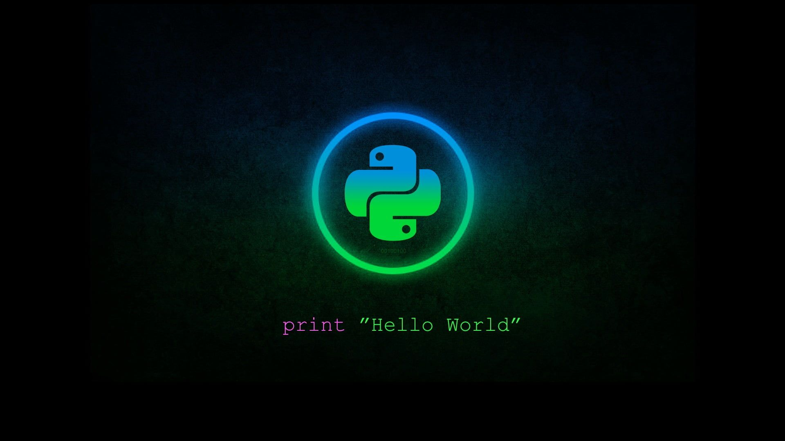

Ansari Zainab
I have completed a Bachelor of Science in Information Technology (BSc IT) from Maharashtra College
and am
currently pursuing a Master of Science in Information Technology (MSc IT) the same institution.
My
academic journey has been deeply rooted in the dynamic field of IT, reflecting my dedication and passion
for technology.
In my personal life, I am fortunate to be part of a supportive family. My household
consists of my
mother, father, and three brothers, who have all played significant roles in my life and academic
pursuits.
Their encouragement and support have been instrumental in my educational achievements and
continue to inspire me as I advance in my studies.
HOBBIES
Cooking
Reading
Chess
Web-Dev
HTML

HTML (HyperText Markup Language)
Role: Structure and content of web pages.
Description: HTML is the foundational language for creating web pages. It provides the basic structure,
including elements like headings, paragraphs, links, and images.
CSS

CSS (Cascading Style Sheets)
Role: Styling and layout of web pages. Description: CSS is used to control the presentation of HTML elements. It handles visual aspects like colors, fonts, spacing, and layout, making web pages look attractive and responsive.
JavaScript
JavaScriptRole: Interactivity and client-side scripting.
Description: JavaScript enables dynamic content and interactive features on web pages. It can manipulate the DOM (Document Object Model) to update content, validate forms, and handle events like clicks and keystrokes.
SQL
SQL (Structured Query Language)
Role: Database management. Description: SQL is used to interact with relational databases. It allows you to create, read, update, and delete data stored in databases, essential for data-driven web applications.
PHP
PHP (Hypertext Preprocessor)
Role: Server-side scripting. Description: PHP is a server-side language used to create dynamic web content and manage server-side tasks. It often works with databases to generate and manage web content based on user interactions.
python
Python
Role: Server-side scripting and web frameworks. Description: Python is used in web development through frameworks like Django and Flask. It is known for its simplicity and readability, making it a popular choice for building robust web applications.